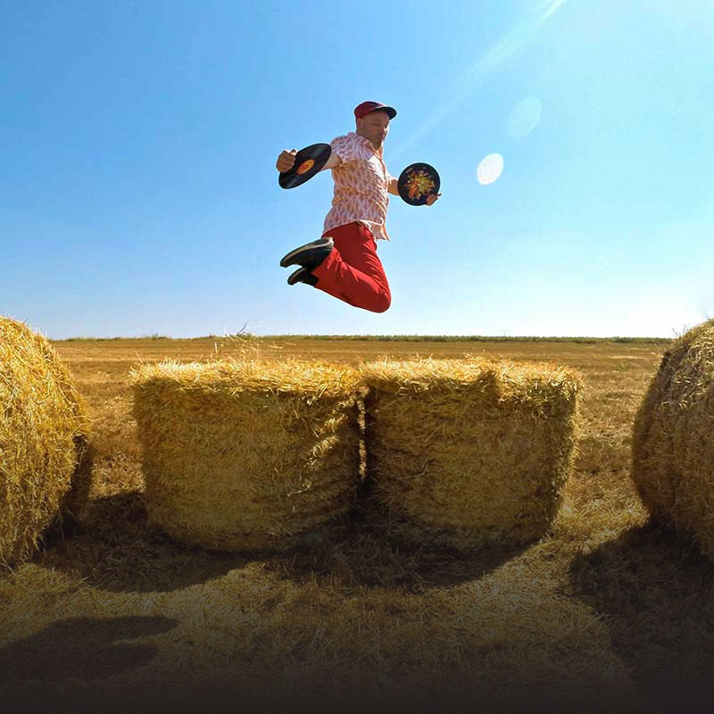

Dj Click
FRANCIA
Arquitecto sonoro de catálogos tan globales como adictivos en la pista de baile.
Se le conoce como el “General” o el “todo terreno”, apodos que sirven para describir gráficamente el espíritu aventurero de este pinchadiscos y músico de origen francés especialista en mezclar sonidos gitanos, orientales, tropicales y flamencos, entre otros. Fundador del sello No Fridge, suma colaboraciones con gente como Manu Chao y se le reconoce ser mucho más que un mero administrador de la creación ajena: como bien definió un reseñista de su obra, “Dj Click es uno de esos productores que maneja el lado barroco de la electrónica para construir grandes canciones de ambiciones globales”.